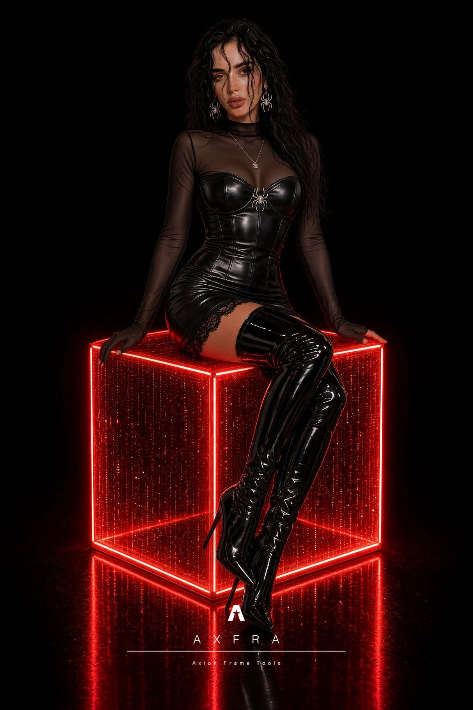

El rostro de KATEFA.
El primer plano deja ver las pecas sobre la nariz, la forma de los ojos y las cejas marcadas. Son rasgos que ayudan a reconocerla cuando el plano se abre o cambia la iluminación.
ALARSI creó a KATEFA con AXFRA para un cliente. Durante 2027 modelará prendas para su tienda online y será el rostro de su publicidad.
El primer plano deja ver las pecas sobre la nariz, la forma de los ojos y las cejas marcadas. Son rasgos que ayudan a reconocerla cuando el plano se abre o cambia la iluminación.

El top rosa de encaje y el short de denim se mantienen en ambas composiciones. La pose, el encuadre y la luz cambian qué parte del conjunto llama primero la atención.


KATEFA cambia de vestuario. El vestido negro de acabado brillante, las mangas de malla y los accesorios con forma de araña aparecen en dos puestas en escena nocturnas.

En AXFRA, la identidad, el vestuario, la pose, la cámara y la iluminación se pueden trabajar por separado. Eso permite preparar nuevas composiciones para la tienda y sus campañas tomando a KATEFA como referencia común. Su Identity Core es privado.